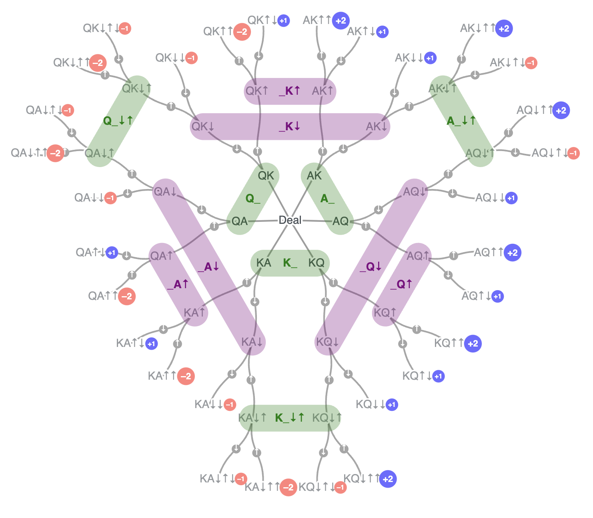

During the first AI Poker Camp session on Monday 7/15/24, we asked participants to list the deterministic situations in the Kuhn Poker game. In other words, points of the game where it is strictly best to play a certain action.
We started with the full game tree:

We came up with a list of 5 of these:
#
Scenario
Action
1
_Q↑: Q as Player 2 facing a bet
Should always play ↓ fold
2
_A↑: A as Player 2 facing a bet
Should always play ↑ call
3
_A↓: A as Player 2 facing a check
Should always play ↑ bet
4
Q_↓↑: Q as Player 1 checking and then facing a bet
Should always play ↓ fold
5
A_↓↑: A as Player 2 checking and then facing a bet
Should always play ↑ bet
The game tree is then reduced to:
There are 2 others that we knew were slightly different, but we still believed that they belonged in this category:
#
Scenario
Action
6
K_↓: K as Player 2 facing a check
7
K_: K as Player 1 acting first
My assumption was that 6 and 7 were trickier because they relied on the opponent playing under the conditions of 1-5 above. Things turned around and I became the confused one when a couple of participants pointed out that at K_ it is not always clearly best to play ↓!
Betting with a K knowing that your opponent will always play perfectly (fold with Q and call with A) does not seem intuitively very profitable, but this exercise is asking for deterministic situations where it is definitely best to play one action.
Going forward on this page, we are assuming that players play their mandatory +EV decisions correctly (i.e., numbers 1-5 above).
_K↓
We are looking at TPOT (this part of the tree) when has a K and is facing a ↓ (check):
If playing ↑, we have: \[
\mathbb{E} = -2*\Pr(\text{P1 A Plays \downarrow}) + 1*\Pr(\text{P1 Q Plays \downarrow})
\]
Playing ↓ has: \[
\mathbb{E} = -1*\Pr(\text{P1 A Plays \downarrow}) + 1*\Pr(\text{P1 Q Plays \downarrow})
\]
Therefore in this case ↓is strictly best and we can include this case on our list of deterministic situations.
The updated tree:
K_
We are now looking at TPOT (this part of the tree) and can end up on one of these 7 nodes:
At infoset K_, when the K opening action plays ↑, we end up in 2 possible nodes and have known EV:
import {Plot} from'@observablehq/plot'// Create sliders for k and q, constrained between 0 and 1viewof k = Inputs.range([0,1], {step:0.01,label:"k"})viewof q = Inputs.range([0,1], {step:0.01,label:"q"})// Calculate z based on the functionz =-0.5* k - q +1.5* k * q// Display the current value of zmd`The current value of z is: ${z.toFixed(4)}`
functioncreatePlot(k, q) {const points = [];for (let x =0; x <=1; x +=0.02) {for (let y =0; y <=1; y +=0.02) { points.push({x, y,z:-0.5* x - y +1.5* x * y}); } }return Plot.plot({width:600,height:400,x: {label:"k",domain: [0,1]},y: {label:"q",domain: [0,1]},color: {type:"linear",domain: [-1,1],scheme:"RdBu" },marks: [ Plot.contour(points, {x:"x",y:"y",z:"z",stroke:"currentColor",interval:0.05}), Plot.image(points, {x:"x",y:"y",z:"z",interpolate:"nearest"}), Plot.dot([{x: k,y: q}], {x:"x",y:"y",stroke:"red",fill:"red"}) ] })}createPlot(k, q)
Mathematical Conclusions
We can set \(-0.5 = -0.5*k - q + 1.5*k*q\) to compare the EV of betting to checking.
We see that if you have check and then call with at least \(k \geq 0.5\) then you do at least as good as betting. You do strictly better if \(0.5 < k < 1\).